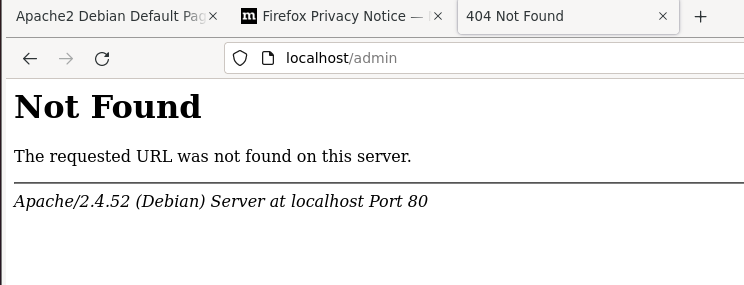

Pvm: 14.3.2022
Luin virhelokit kuten Karvisen ohjeissa.
erik@last:~$ sudo cat /var/log/apache2/error.log
[Mon Mar 14 13:09:36.717722 2022] [mpm_event:notice] [pid 13349:tid 139906561858880] AH00489: Apache/2.4.52
(Debian) configured -- resuming normal operations
[Mon Mar 14 13:09:36.718271 2022] [core:notice] [pid 13349:tid 139906561858880] AH00094: Command line:
'/usr/sbin/apache2'
[Mon Mar 14 13:18:20.474490 2022] [mpm_event:notice] [pid 13349:tid 139906561858880] AH00492: caught SIGWINCH,
shutting down gracefully
[Mon Mar 14 13:18:20.511087 2022] [mpm_event:notice] [pid 13567:tid 140042020863296] AH00489: Apache/2.4.52
(Debian) configured -- resuming normal operations
[Mon Mar 14 13:18:20.511149 2022] [core:notice] [pid 13567:tid 140042020863296] AH00094: Command line:
'/usr/sbin/apache2'
[Mon Mar 14 13:22:28.889528 2022] [mpm_event:notice] [pid 13567:tid 140042020863296] AH00492: caught SIGWINCH,
shutting down gracefully
[Mon Mar 14 13:22:28.926207 2022] [mpm_event:notice] [pid 13654:tid 140445322558784] AH00489: Apache/2.4.52
(Debian) configured -- resuming normal operations
[Mon Mar 14 13:22:28.926276 2022] [core:notice] [pid 13654:tid 140445322558784] AH00094: Command line:
'/usr/sbin/apache2'
En löytänyt mitään kiinnostaavaa sieltä, vaikutti siltä että sinne oli logattu apachen käynnistymiset.
Olin tehnyt kotisivun joka näkyy osoitteessa localhost tehtävässä 3b. Poistin tiedoston index.htm.
Yritin avata sivun localhost, se ei tietenkään onnistunut
Katson lokitiedoston loppua
[Mon Mar 14 14:01:50.954395 2022] [autoindex:error] [pid 13656:tid 140445136930560] [client 127.0.0.1:43104] AH01276: Cannot serve directory /home/erik/public_html/: No matching DirectoryIndex (index.html,index.cgi,index.pl,index.php,index.xhtml,index.htm) found, and server-generated directory index forbidden by Options directive
Sinne oli ilmennyt virhe joka kertoi että resurssi mitä haettiin ei ollut olemassa.